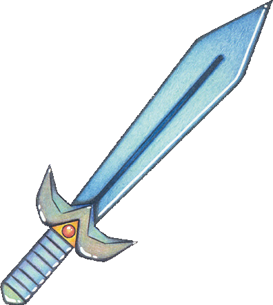
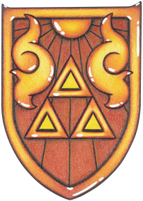
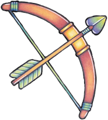
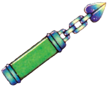

04 进度系统
核心问题
- 如何让玩家持续感受到"我在变强"的同时，确保每次变强都带来新的探索可能性而非单纯的数值膨胀？
- 在仅有6个可用按键的硬件约束下，如何设计一个包含十余种核心物品的进度系统，使每种物品都让人觉得不可或缺？
机制描述
物品驱动的进度结构
《众神的三角神力》的进度系统以核心物品获取为主轴，辅以数值成长。玩家能力的扩展几乎完全由物品驱动，而非经验值或技能树。
核心物品获取路线：
| 物品 | 获取位置 | 地下城内用途 | 表世界/战斗用途 |
|---|---|---|---|
| 弓 | Eastern Palace | 射击远处眼睛开关 | 远程攻击敌人 |
| Power Glove | Light World（非地下城） | 搬起石头 | 搬起挡路的浅色石头进入新区域 |
| Titan's Mitt | Dark World | 搬起深色石头 | 搬起深色石头进入更多区域 |
| Zora's Flippers | Light World（非地下城） | 深水区域通行 | 游泳穿越水域、通过瀑布 |
| Moon Pearl | Tower of Hera | — | 在Dark World保持人形 |
| Magic Hammer | Palace of Darkness | 砸桩开关、砸栅栏 | 砸开障碍物 |
| Hookshot | Swamp Palace | 跨越悬崖、拉物品、触发开关 | 跨越悬崖探索、眩晕敌人 |
| Fire Rod | Skull Woods | 点火解谜 | 远程火焰攻击 |
| Ice Rod | 可早期获取（非强制） | 冻结敌人 | 冻结敌人配合其他攻击 |
| Cane of Somaria | Misery Mire | 生成方块压开关、垫脚 | — |
| Magic Mirror | 早期获得 | — | Dark→Light世界切换 |
| Pegasus Shoes | 早期获得 | 冲刺撞破障碍 | 冲刺斩、撞树掉物品、快速移动 |





数值成长体系
| 维度 | 起点 | 终点 | 成长方式 |
|---|---|---|---|
| HP（心） | 3心 | 20心 | 心之容器（地下城Boss）+ 心之碎片（4枚合一） |
| 攻击力 | 1× | 4× | 剑升级（3次） |
| 防御力 | 1× | 0.25× | 蓝色铠甲（0.5×）、红色铠甲（0.25×） |
| 魔法槽 | 基础 | 2×容量 | 魔法仙子升级 |
| 炸弹容量 | 基础 | 50 | NPC/小游戏奖励 |
| 箭矢容量 | 基础 | 70 | NPC/小游戏奖励 |
| 瓶子 | 0 | 4 | 散布于世界各处 |
物品获取顺序约束
- 硬性前置：Eastern Palace 必须第一个完成（弓是多个后续地下城的前置条件）
- Light World：三个地下城的大致顺序固定
- Dark World：7个地下城存在一定弹性，但受物品能力限制——例如需要Hookshot才能到达某些地下城入口
- Power Glove、Zora's Flippers、Magic Mirror、Pegasus Shoes 在Light World阶段早期获取，属于基础能力层
按键与装备系统
SNES控制器可用按键：A/B/X/Y/L/R（6个），实际映射为：
- A键：情境化动作（持剑=攻击，持道具=使用道具）
- B键：取消/特殊动作
- X/Y：装备的道具切换
- L/R：地图/道具菜单
玩家同一时间只能装备极少数道具，大部分物品需要通过菜单切换后才能使用。
设计分析
解决了什么设计问题
问题一：如何让线性流程感觉开放？
物品作为"钥匙"的设计哲学解决了这个核心矛盾。每个核心物品同时承担三个角色：
- 地下城解谜工具——在获取该物品的地下城内，作为关卡机制的核心
- 表世界探索钥匙——解锁之前遇到过但无法通过的地形障碍
- 战斗工具——提供新的攻击或防御手段
这种"一物三用"的设计使得玩家的注意力始终在三个系统间流动。获得新物品后，玩家的第一反应不是"我变强了"，而是"我现在能去哪儿了"。
问题二：如何在有限输入下管理大量能力？
6个按键的硬件约束迫使设计团队做出一个关键决策：让每个物品尽可能多功能。如果玩家同一时间只能装备一个道具，那这个道具最好在很多场景下都有用。这是"约束催生创新"的经典案例。
对比一个反面假设：如果手柄有20个按键，设计师可以为每种场景设计专用物品，结果是每个物品都只有单一用途，玩家的决策空间反而缩小——因为不存在"装备什么"这个策略选择。
"约束催生创新"的模式在ALttP中反复出现：
- 6个按键 → 物品必须多功能 → 一物多用协同设计（本报告 + 09 元素协同）
- 1MB卡带 → 地图不能简单翻倍 → 双世界复用拓扑（02 世界设计）
- 无文字教学 → 谜题自身必须教会玩家 → 教学→应用→精通三阶段（06 谜题设计）
这不是巧合——当设计资源（按键数、存储空间、文本量）受限时，设计师被迫寻找"用更少做更多"的方案。关键是：这些方案在约束消失后仍然比"用更多做更多"更好。一物多用在20按键的手柄上仍然比一物一用更优雅，因为多功能物品在系统间产生的化学反应是单一功能物品永远无法提供的。
问题三：如何维持长周期的探索动力？
宏循环的核心驱动力被精简为一个模式：获得新物品 → 回忆之前遇到过的障碍 → 回去探索。这要求：
- 世界设计必须在玩家早期路径上布置可见但不可达的区域（"诱惑"）
- 物品能力必须与这些障碍精确对应
- 玩家必须能从记忆中检索出这些障碍的位置（因此障碍需要视觉上显著且易于记忆）
创造了什么体验
- 顿悟时刻：拿到新物品后，玩家脑海中会闪过"啊，那个地方我现在可以去了"的念头。这种连接是玩家自行建立的，比任何任务标记都更有驱动力。
- 渐进式的世界开放：世界不是一次性展开的，而是随能力增长一圈一圈地扩大。每次扩展都让之前走过的区域呈现新的意义。
- 能力身份感：玩家不是在扮演一个固定角色，而是在逐步构建自己的"能力配置"。装备哪个道具、带什么瓶子，这些选择构成了每次探索的独特性。
关键设计决策及其理由
决策一：物品获取绑定地下城，但使用场景主要在表世界
理由：这确保了地下城体验与表世界探索之间的双向驱动。地下城是"获取"的场所，表世界是"使用"的场所，两者互为因果。
决策二：数值成长作为物品系统的辅助而非主体
理由：心之容器和剑升级提供的是"我能承受更多失误"的容错空间，而非"我能不能通过"的关键门槛。这保证了进度主要由玩家的知识（知道去哪、怎么解谜）和能力物品驱动，而非数值碾压。
决策三：Ice Rod等非必需物品的存在
理由：非必需物品为探索者型玩家提供了奖励。它们不是通关的必经之路，但找到它们会让体验更丰富。这创造了一种"世界上有我不知道的东西"的感觉，激励彻底探索。
设计过程推导
从设计目标和硬件约束反推决策路径：
起点约束：
- SNES手柄，6个可用按键
- 需要支撑约13小时的游玩时长
- 两个世界（Light/Dark），需要大量可探索内容
- 目标受众包括儿童和休闲玩家
推导路径：
- 6个按键 → 同一时间只能装备少量物品 → 每个物品必须多功能 → "一物三用"设计（探索/战斗/解谜）
- 需要支撑13小时 → 需要大量能力扩展节点 → 但按键有限，不能无限增加物品种类 → 将部分进度转移到数值成长（心、剑、铠甲），形成双层进度
- 双层进度需要协调 → 物品进度提供"质变"（新能力），数值进度提供"量变"（更强更耐打） → 质变控制流程推进，量变控制难度曲线
- 两个世界需要差异化 → Moon Pearl + Magic Mirror 构成世界切换的能力基础 → Dark World的障碍类型需要比Light World更复杂 → 引入Titan's Mitt作为Power Glove的升级版
- 推测 数值成长中，心之碎片（4枚合一）的设计可能是为了提供更密集的奖励节奏。如果只有心之容器（Boss掉落），玩家在地下城之间可能长时间没有正反馈。碎片提供了"虽然没有获得新能力，但我离变强又近了一步"的渐进感。
- 推测 4个瓶子的限制可能是为了与物品栏空间协调，同时也是对资源管理的轻度压力——玩家需要思考"这个瓶子里装什么"，这本身就是一种决策乐趣。
反事实推演
如果去掉"物品三用"设计，每种物品只有单一用途：
物品数量需要大幅增加才能覆盖同样多的场景。在6按键约束下，菜单切换频率急剧上升，操作体验恶化。更关键的是，玩家不再需要在脑中建立"这个物品还能用在哪里"的联想，探索的动力从主动回忆变为被动接受任务指引。游戏的可玩时长可能缩短30-40%，因为失去了一物多用的深度。
如果所有地下城可以任意顺序完成：
需要取消物品之间的前置关系。这意味着每个地下城都不能依赖任何特定物品作为解谜核心。地下城的关卡设计将变得同质化——所有谜题只能用基础能力（剑、冲刺）解决。这直接破坏了"新物品=新机制"的节奏感，地下城体验的多样性将大幅下降。
如果去掉数值成长，只保留物品进度：
Boss战的难度曲线将变得非常陡峭。后期Boss的设计空间被压缩——不能假设玩家有多少HP或攻击力，只能依赖物品能力做差异化。数值成长在这里的作用不是"让玩家变强"，而是"给关卡设计师一个可控的难度参数范围"。
如果按键数量翻倍（12个可用键）：
设计师可能会为每种场景设计专用物品，导致物品数量膨胀但单个物品的深度下降。玩家的策略选择（装备什么）的重要性降低，因为所有能力都能随时使用。"装备决策"这个隐性玩法层面消失。游戏的优雅度下降，可能变成一个更平庸的动作冒险游戏。
可迁移经验
当输入方式有限时，不要试图突破限制，而是让每个元素承担更多职责。多功能物品比单一功能物品更令人印象深刻，因为玩家在使用时会主动发现它的多种用途，这种发现感本身就是奖励。
进度系统应区分两类成长：改变玩家能做什么的"质变"（新物品/新能力），和改变玩家做多好的"量变"（数值提升）。质变控制游戏的流程节奏和探索范围，量变控制难度曲线和容错空间。两者不应混淆。
先让玩家看到无法通过的障碍，再给玩家通过的能力。这种"悬念-解答"结构比"获得能力后才知道去哪用"更有驱动力，因为它激活了玩家主动回忆和规划的认知过程。
在必需的线性流程之外，放置非必需但有价值的物品。这为"探索者"型玩家提供了与"完成者"型玩家不同的满足感来源，同时也暗示了世界的丰富程度超出主线流程。
世界应随玩家能力逐步展开，而非一开始就完全开放。每次展开都应该让玩家重新审视已探索的区域——不是回到原点，而是以新的能力在已知区域中发现新路径。
当设计空间过大（"什么都可以"）时，反而容易产出平庸的设计——每个功能用专用工具解决，系统间没有交集。主动引入约束（如"同一时间只能装备3个能力""世界地图不超过64屏"），迫使自己在约束内寻找全局最优解。
具体操作：在设计初期为每个系统设定一个"人为约束"——不是硬件限制，而是设计规则。如果最终方案在约束内工作良好，保留约束；如果方案明显需要突破约束，才放宽。这个"先紧后松"的过程比"一开始就不设限"产出更有结构感的设计。